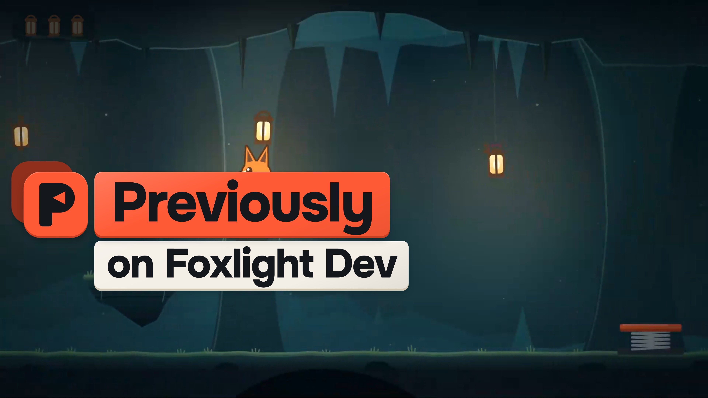
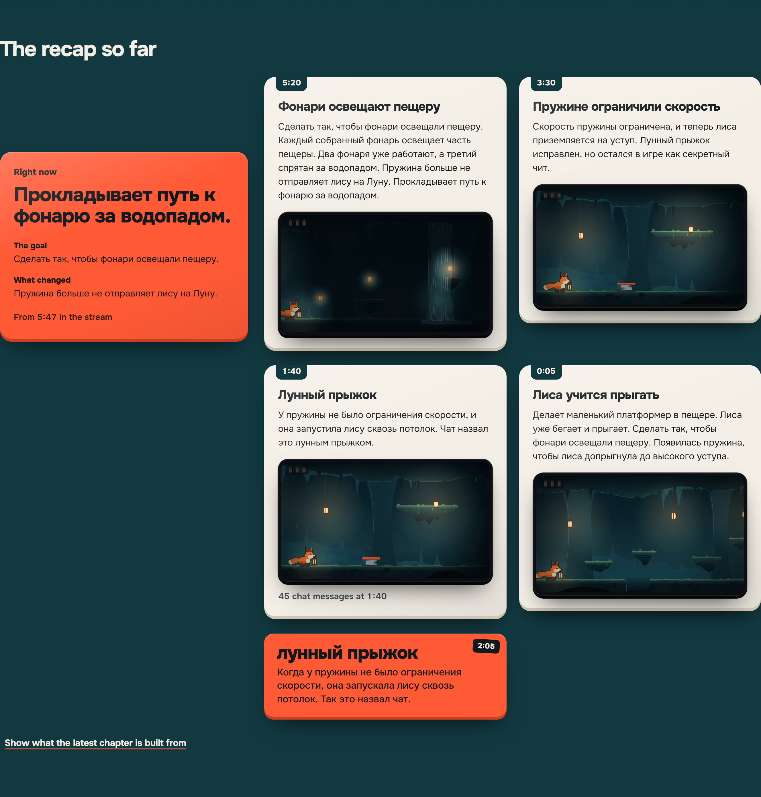

A catch-up recap for every raid and late arrival on Twitch
Previously
What did I miss?
A raid drops a whole audience into the middle of a stream. They missed the jokes, the bugs and why chat keeps typing MOON JUMP.
The streamer can stop to explain or keep playing and leave them lost. Previously answers for them: on stream, in chat and on a page.
Chat at 1:4045 messages in 10 s
MOON JUMP
he's gone
fox to the moon
the fox has left the cave
MOON JUMP MOON JUMP
clip it
where did he go
and 38 more
The moon jump in our example recording of Foxlight, a small game we made
Every raid gets its own Previously on
Explains the joke chat named
Greets the raid

Opens the recap
Ends on right now
Previously builds it from the story it has already published, so it starts the moment the raid lands, with the stream's own clips.
From the example recording. Its chat and raid are written for the demo; the clips are real footage of Foxlight, the small game we made for it.
Twelve seconds, one thing at a time
0:01Welcome, by raid name
0:03The chapters so far
0:05The moment chat exploded
0:07The joke, explained
0:08What is happening now
Frames from the example's raid scene. Streamers can also set it to 10 or 15 seconds.
Anyone who joins late can type !previously
Chat gets the latest chapters, what is happening now and a link to the recap page, straight from the published story.
!lore moon jump explains a running joke only when its origin is in the sources. Otherwise it says the origin is not confirmed yet.
Replies from the example recording, written by the same code the chat bot uses.
The whole story on one page, no account needed
Right now first. The page opens on what is happening, then the chapters in order.
The real moments. Each chapter plays the clip it describes.
No spoilers. Read up to here stops the story at an earlier point.
Only what was published. Drafts and transcripts stay on the streamer's computer.
Recaps in your stream's language
Choose any language. The model writes the chapters in it, and the scene and chat bot labels come in 14 languages. English is the default.

The example recording switched to Russian. It holds English and Russian wording.
How the raid scene opens in each built-in language
PreviouslyEnglish
РанееРусский
AnteriormenteEspañol
РанішеУкраїнська
AnteriormentePortuguês
BisherDeutsch
PrécédemmentFrançais
In precedenzaItaliano
WcześniejPolski
Daha önceTürkçe
これまでの配信日本語
지난 이야기한국어
前情提要简体中文
前情提要繁體中文
The streamer stays in control from a dock in OBS
Edit
Your wording replaces the chapter everywhere after its check. Later rewrites leave it alone.
Pin
Puts a chapter first in the next raid scene. Checks still apply.
Pause listening
Stops the microphone and chat collection at once.
Forget last 2 min
Erases that window and everything built from it.
Fix a chapter once, and every place uses your wording
3:30
Spring gets a speed limit
Replaced
3:30
Moon jump becomes a cheat code
Applied
Published. The recap page, the chat answer and the next raid scene use your wording.
The old wording is withdrawn everywhere at once. A safe correction does not wait for another full hold.
The example's recap right after Apply my wording. The chapter is marked as edited by the streamer.
Nothing reaches viewers before it is checked and held for 75 seconds
What it hears
Heard at 5:20
Each lantern you collect lights part of the cave.
Heard at 5:40
Two lanterns work. The third one is behind the waterfall.
Chat at 5:44
where is the third one
What the model proposes
Two lanterns work, and the third one is behind the waterfall
Source: heard at 5:40
Grounded in its sourcesModerationPrivacy
The hold
75 s
Time for the streamer to edit or forget before anyone sees it.
One published version
5:20
Lanterns light the cave
Each lantern the fox collects lights part of the cave. Two lanterns work, and the third one is behind the waterfall.
Raid scene
!previously
Chat answer
Recap page
The model only proposes. Code on the streaming computer checks each claim against its sources and the privacy state, waits out the hold and publishes one version that every output reads.
Forget follows the sources into everything built from them
A model reply or a language switch that finishes later cannot bring the text back. Pins do not protect anything.
Heard at 5:20
Next, lanterns. The spring no longer launches the fox to the moon, so the fox can reach them.
The chapter built on it
Its translations
Channel terms it explained
Clips in the local cache
Queued raid scenes
Recordings and exports
A clip Twitch has already made stays on Twitch. Previously hides it and links to the clip manager.
Built in one Codex session, from research to tested code
Codex researched the current Twitch and OpenAI contracts, planned the architecture and wrote the code and its tests. Parallel workers each owned one part; the main session joined them and walked every user journey.
Runtime
Storage
Twitch adapters
Interface
Main Codex session
joins the parts, reviews the joins and checks every journey
Claude agents made the final visual pass: the mark, the raid scene, the pages and the Foxlight example.
1,000 of 1,000
chat messages committed through the real EventSub transport and SQLite at 20 per second, with no gaps.
577,200
messages through the story core over eight virtual hours, including a burst at 200 per second.
Reviews caught real bugs
A full chat queue could drop a deletion that had arrived
A failed microphone pause reported success
A chat flood pushed speech out of the story after an outage
Measured on one Windows machine with fixtures in place of Twitch sockets and the OpenAI API.
Try the example now, then run it on your channel
The example recording, no keys
previously-seven.vercel.app/replay
Jump to the raid, open the sources behind a chapter, apply a correction and preview the next raid scene.
Your own channel
Windows, Node.js 22.13, OBS, your Twitch application and OpenAI key
npm ci npm run setup:local # add the Twitch app and OpenAI key to .env npm run build npm start
Setup checks each step, then the scene goes into OBS as a Browser Source.